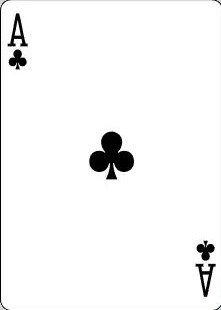
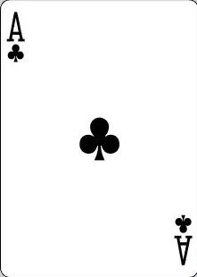

Welcome to the game of inbetweens an easy to understand game
of probability. This game can be won with
luck but much easier when you understand
the probabilities involved. This site will not
only teach you how to play the game but
also teach you how to win by understanding the probabilities involved.
Rank of Cards
Red Ace(high), K, Q, J, 10, 9, 8, 7, 6, 5, 4, 3, 2 Black Ace(low)
The Game & Objective
The player is shown two random cards, face up, side by side. The player must decide
to bet or pass on whether the cards value is inbetween the values of the first two cards.
The goal is to reach 1000 credits.
The Ante
Once the first two cards are dealt the player chooses whether they wish to be dealt
the hit card.
- If the two dealer cards are consecutive or equal in value then there is clearly
no card in-between and so the player can pass and two more cards are dealt.
- If either of these scenarios occur then the player only pays 5 credits
when the initial two cards are one or more apart in value, this way the player
has a chance but also cannot continue to hold their bet until they are dealt cards
that guarantee a win.
- The player gives 5 credits ante to the pot each time that a playable set of cards are dealt.
The Bet
The bet will then commence once a set of playable cards are dealt.
- The player automatically pays the 5 credits ante to the pot, then the hit card is
placed face down and the player chooses whether to either pass or bet.
- The player bets on the premise that the hit card has a value in-between the dealers cards values.
- The player can only bet with the credits they have.
- If the hit card is not between the dealers cards then the player loses the bet, this
includes cards equal in value.
- If the card is in-between, then the player wins the pot and play continues from the beginning.
- The player wins the game outright if they reach 1000 credits.


 
